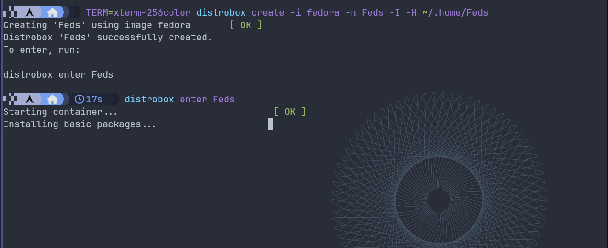
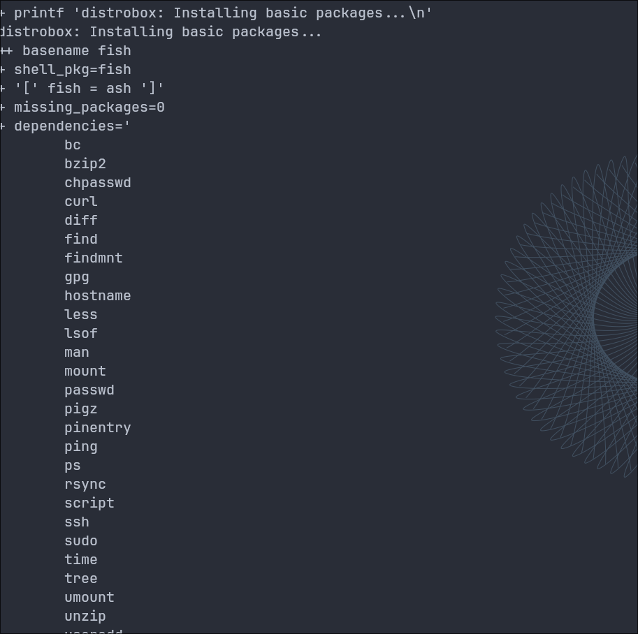

Set up Distrobox the easy way
Table of Contents
Hey there, tech enthusiasts! Ready to embark on a journey into the world of Distrobox? Strap in as we explore the ins and outs of this nifty tool. But first things first…
What's the deal with Distrobox?
Ever wished you could test out different Linux distributions without committing to full-blown installations? Well, Distrobox grants you that wish! It's like having a box full of distros ready to play with, without the hassle of setting up multiple virtual machines or partitioning your hard drive.
Wrangling with Podman
Now, you might wonder, "What's Podman got to do with all this?" Simply put, Podman is our trusty sidekick in this adventure. It helps us manage containers effortlessly, making our Distrobox experience smoother than a fresh jar of peanut butter.
Let's get cooking: Installing distrobox and podman
Enough chit-chat, let's roll up our sleeves and get down to business. Installing Distrobox and Podman is as easy as pie. Just fire up your terminal and follow along:
$ sudo apt-get install distrobox podman # For Debian/Ubuntu$ sudo yum install distrobox podman # For CentOS/RHEL$ sudo dnf install distrobox podman # For FedoraFor other distros, check out the official documentation for installation instructions. Once that's done, you're all set to dive into the container wonderland!
On my Arch install, I'd do this a little differently via a shell script that I have:
#!/usr/bin/env zsh
if [[ "$1" == "clean" || "$1" == "cleanup" || "$1" == "--clean" || "$1" == "-c" || "$1" == "--cleanup" ]]; then
sudo rm -rf ~/.config/containers/ ~/.local/share/containers/ ~/.cache/containers/ ~/.Podman/ ~/.local/share/icons/distrobox /var/lib/containers /var/tmp/podman-static/1000/containers ~/.local/share/podman-static
echo "Cleaned up container data"
else
# stuff is stored in ~/.config/containers and ~/.local/share/containers
mkdir -p ~/.Podman/bin/
mkdir -p ~/.home/ # the home directory
sudo chown -R stig:stig /home/stig/.home/ # fix permission issues inside containers
# Install distrobox and bundled podman
# Distrobox
curl -s https://raw.githubusercontent.com/89luca89/distrobox/main/install | sh -s -- --prefix ~/.Podman
curl -s https://raw.githubusercontent.com/89luca89/distrobox/main/distrobox --output ~/.Podman/bin/distrobox
# Podman
# curl -s https://raw.githubusercontent.com/89luca89/distrobox/main/extras/install-podman | sh -s -- --prefix ~/.Podman
curl -fsSL https://github.com/89luca89/podman-launcher/releases/latest/download/podman-launcher-amd64 -o ~/.Podman/bin/podman
curl -fsSL https://github.com/89luca89/lilipod/releases/latest/download/lilipod-linux-amd64 -o ~/.Podman/bin/lilipod
chmod +x ~/.Podman/bin/{podman,lilipod}
# use better Arch and Ubuntu images. These images are bigger, but don't take much time to build on using Distrobox
mkdir -p ~/.cache/containers/
rm -rf ~/.cache/containers/**
ln -sf ~/.dotfiles/containers/short-name-aliases.conf ~/.cache/containers/
# Podman-compose
sudo pacman -S python-dotenv --needed --noconfirm
curl -o ~/.Podman/bin/podman-compose https://raw.githubusercontent.com/containers/podman-compose/main/podman_compose.py
chmod +x ~/.Podman/bin/podman-compose
# Conmon
export cwd=$PWD
cd ~/.Podman/podman/bin/
wget "https://github.com/containers/conmon/releases/download/2.1.7/conmon.amd64" -o "conmon"
chmod +x ./conmon
cd $cwd
# NOTE: `fuse-overlayfs` is required for rootful containers to work
sudo -E mkdir -p /etc/containers
sudo -E cp -f ~/.dotfiles/misc/policy.json /etc/containers/
# IGNORE THE cp ERROR
# for GUI apps to work
xhost +si:localuser:$USER &> /dev/null # who needs this output
# sudo ln -sf ~/.Podman/bin/** /usr/local/bin
echo "ADD 'export TERM=xterm-256color' IN ~/.Podman/bin/* FOR DISTROBOX TO WORK CORRECTLY -> ESP FOR THE DISTROBOX SCRIPT"
fi
Here are the contents of my policy.json file:
{
"default": [
{
"type": "insecureAcceptAnything"
}
],
"transports": {
"docker": {
"docker.io/library/hello-world": [
{
"type": "reject"
}
],
"registry.access.redhat.com": [
{
"keyType": "GPGKeys",
"type": "signedBy",
"keyData": "VGhlIGZvbGxvd2luZyBwdWJsaWMga2V5IGNhbiBiZSB1c2VkIHRvIHZlcmlmeSBSUE0gcGFja2FnZXMgYnVpbHQgYW5kCnNpZ25lZCBieSBSZWQgSGF0LCBJbmMuICBUaGlzIGtleSBpcyB1c2VkIGZvciBwYWNrYWdlcyBpbiBSZWQgSGF0CnByb2R1Y3RzIHNoaXBwZWQgYWZ0ZXIgTm92ZW1iZXIgMjAwOSwgYW5kIGZvciBhbGwgdXBkYXRlcyB0byB0aG9zZQpwcm9kdWN0cy4KClF1ZXN0aW9ucyBhYm91dCB0aGlzIGtleSBzaG91bGQgYmUgc2VudCB0byBzZWN1cml0eUByZWRoYXQuY29tLgoKcHViICA0MDk2Ui9GRDQzMUQ1MSAyMDA5LTEwLTIyIFJlZCBIYXQsIEluYy4gKHJlbGVhc2Uga2V5IDIpIDxzZWN1cml0eUByZWRoYXQuY29tPgoKLS0tLS1CRUdJTiBQR1AgUFVCTElDIEtFWSBCTE9DSy0tLS0tClZlcnNpb246IEdudVBHIHYxLjIuNiAoR05VL0xpbnV4KQoKbVFJTkJFcmdTVHNCRUFDaDJBNGIwTzl0K3Z6QzlWclZ0TDFBS3ZVV2k5T1BDamt2UjdYZDhEdEp4ZWVNWjVlRgowSHR6SUc1OHFEUnlid1VlODlGWnByQjFmZnVVS3pkRStIY0wzRmJOV1NTT1hWalpJZXJzZFh5SDNOdm5MTExGCjBETlJCMml4M2JYRzlSaC9SWHBGc054RHAyQ0VNZFV2YllDekU3OUsxRW5VVFZoMUwwT2YwMjNGdFBTWlhYMGMKdTdQYjVESTVsWDVZZW9YTzZSb29kcklHWUpzVkJRV25yV3c0eE5UY29uVWZOUGswRUdadEVuenZIMnp5UG9KaApYR0YrTmN1OVh3YmFsbllkZTEwT0N2U1dBWjV6VENwb0xNVHZRaldwYkNkV1hKekNtNkcrL2h4OXVwa2U1NDZICjVJanRZbTRkVElWVG5jM3d2RGlPRGdCS1J6T2w5ckVPQ0lnT3VHdER4UnhjUWtqckMreHZnNVZrcW43dkJVeVcKOXBIZWRPVStQb0YzREdPTStkcXYrZU5LQnZoOVlGOXVnRkFRQmtjRzd2aVpndkdFTUdHVXB6TmdON1huUzFnagovRFBvOW1aRVNPWW5LY2V2ZTJ0SUM4N3AyaHFqcnhPSHVJN2ZrWlllTkljQW9hODNyQmx0RlhhQkRZaFdBS1MxClBjWFMxLzdKelAwa3k3ZDBMNlhidS9JZjVrcVdRcEt3VUluWHR5U1JrdXJhVmZ1SzNCcGErWDFYZWNXaTI0SlkKSFZ0bE5YMDI1eHgxZXdWekdOQ1RsV24xc2tRTjJPT29RVFY0QzgvcUZwVFc2RFRXWXVyZDQrZkUwT0pGSlpRRgpidWhmWFl3bVJsVk9nTjVpNzdOVElKWkpRZllGajM4Yy9JdjV2WkJQb2tPNm1mZnJPVHYzTUhXVmdRQVJBUUFCCnRETlNaV1FnU0dGMExDQkpibU11SUNoeVpXeGxZWE5sSUd0bGVTQXlLU0E4YzJWamRYSnBkSGxBY21Wa2FHRjAKTG1OdmJUNkpBallFRXdFQ0FDQUZBa3JnU1RzQ0d3TUdDd2tJQndNQ0JCVUNDQU1FRmdJREFRSWVBUUlYZ0FBSwpDUkFabmkrUi9VTWRVV3pwRC85czVTRlIvWkYzeWpZNVZMVUZMTVhJS1V6dE5OM29jNDVmeUxkVEkzK1VDbEtDCjJ0RXJ1ellqcU5IaHFBRVhhMnNOMWZNcnN1S2VjNjFMbDJOZnZKamtMS0R2Z1ZJaDdrTTdhc2xOWVZPUDZCVGYKQy9KSjcvdWZ6M1VabXlWaUgvV0RsK0FZZGdrM0pxQ0lPNXc1cnlyQzlJeUJ6WXYybTBIcVliV2ZwaFkzdUh3NQp1bjNuZExKY3U4K0JHUDVGK09OUUVHbCtEUkg1OElsOUpwM0h3YlJhN2R2a1BnRWhmRlIrMWhJK0J0dGEyQzdFCjAvMk5LekN4Wnc3THgzUEJSY1U5MllLeWFFaWhmeS9hUUtaQ0F1eWZLaU12c216cys0cG9JWDdJOU5RQ0pweUUKSUdmSU5vWjdWeHFId1JuL2Q1bXcyTVpUSmpielNmK1VtOVlKeUEwaUVFeUQ2cWpyaVdRUmJ1eHBRWG1sQUpiaAo4b2taNGdiVkZ2MUY4TXpLKzRSOFZ2V0owWHhndGlrU283MmZIandoYTdNQWpxRm5PcTZlbzZmRUMvNzVnM05MCkdodDVWZHBHdUhrMHZiZEVOSE1DOHdTOTllNXFYR05EdWVkM2hsVGF2RE1sRUFIbDM0cTJIOW5ha1RHUkY1S2kKSlVmTmgzRFZSR2hnOGNNSXRpMjFuamlSaDdneUZJMk9jY0FUWTdiQlNyNzlKaHVOd2VsSHV4THJDRnBZN1YyNQpPRmt0bDE1alpKYU14dVFCcVlkQmdTYXkyRzBVNkQxKzdWc1d1ZnB6ZC9BYngxL2Mzb2k5WmFKdlcyMmtBZ2dxCmR6ZEEyN1VVWWpXdng0Mnc5bWVuSndoLzBqZVFjVGVjSVVkMGQwckZjdy9jMXB2Z01NbC9RNzN5ektnS1l3PT0KPXpiSEUKLS0tLS1FTkQgUEdQIFBVQkxJQyBLRVkgQkxPQ0stLS0tLQpUaGUgZm9sbG93aW5nIHB1YmxpYyBrZXkgY2FuIGJlIHVzZWQgdG8gdmVyaWZ5IFJQTSBwYWNrYWdlcyBidWlsdCBhbmQKc2lnbmVkIGJ5IFJlZCBIYXQsIEluYy4gIFRoaXMga2V5IGlzIGEgc3VwcG9ydGluZyAoYXV4aWxpYXJ5KSBrZXkgZm9yClJlZCBIYXQgcHJvZHVjdHMgc2hpcHBlZCBhZnRlciBOb3ZlbWJlciAyMDA2IGFuZCBmb3IgYWxsIHVwZGF0ZXMgdG8KdGhvc2UgcHJvZHVjdHMuCgpRdWVzdGlvbnMgYWJvdXQgdGhpcyBrZXkgc2hvdWxkIGJlIHNlbnQgdG8gc2VjdXJpdHlAcmVkaGF0LmNvbS4KCi0tLS0tQkVHSU4gUEdQIFBVQkxJQyBLRVkgQkxPQ0stLS0tLQpWZXJzaW9uOiBHbnVQRyB2MS4yLjYgKEdOVS9MaW51eCkKCm1RR2lCRVZ3REdrUkJBQ3dQaFpJcHZrakk4d1Y5c0ZURG9xeVBMeDF1YjhTZC93K1l1STVPdm00OW12dkVRVlQKVkxnOEZnRTVKbFNUNTlBYnNMRHlWdFJhOUN4SXZONXN5QlZyV1dXdEh0RG5ueWxGQmNxRy9BNkozYkk0RTkvQQpVdFNMNVp4YmF2MCt1dFA2ZjN3T3B4UXJ4YytXSURWZ3B1cmRCS0FRM2Rzb2JHQnF5cGVYNkZYWjV3Q2dvdTZDCnlacEdJQnFvc0phRFdMek5lT2ZiLzcwRC8xdGhMa1F5aFczSko2Y0hDWUpITmZCU2h2YkxXQmY2UzIzMW1nbXUKTXlNbHQ4S21pcGM5Yncrc2FhQWtTa1ZzUS9aYmZqcldCN2U1a2JNcnVLTFZySCtuR2hhbWxIWVVHeUFQdHNQZwpVai9OVVNqNUJtckNzT2tNcG40M25nVExzc0U5TUxoU1BqMm5JSEdGdjlCK2lWTHZvbURkd25hQlJnUTFhSzh6Cno2TUFBLzQwNnlmNXlWSi9NbFRXczEvNjhWd0Rob3NjOUJ0VTFWNUlFME5YZ1pVQWZCSnp6ZlZ6ektRcTZ6SjIKZVpzTUxocjk2d2JzVzEzelVadDFpbmcrdWx3aDJlZTRtZXVKcTZoLzk3MUpzcEZZL1hCaGNmcTRxQ05xVmpzcQpTWm5Xb0dkQ082SjhDeFBJZW1EMklVSHpqb3l5ZUVqM1JWeWR1cDZwY1daQW1oemtLclF6VW1Wa0lFaGhkQ3dnClNXNWpMaUFvWVhWNGFXeHBZWEo1SUd0bGVTa2dQSE5sWTNWeWFYUjVRSEpsWkdoaGRDNWpiMjAraUY0RUV4RUMKQUI0RkFrVndER2tDR3dNR0N3a0lCd01DQXhVQ0F3TVdBZ0VDSGdFQ0Y0QUFDZ2tRUldpY2lDK21XT0MxclFDZwpvb05MQ0ZPek5QY3ZoZDlaYThDODAxSG1uc1lBbmlDdzN5enJDcXRqWW54RER4bHVmSDBGVlR3WAo9ZC9ibQotLS0tLUVORCBQR1AgUFVCTElDIEtFWSBCTE9DSy0tLS0tCg=="
}
]
}
}
}
And here's my short-name-aliases.conf:
# COPY THIS FILE OVER TO ~/.cache/containers
## not .config/containers
[aliases]
"fedora"="registry.fedoraproject.org/fedora-toolbox:40"
# "fedora"="quay.io/toolbx-images/fedora-toolbox"
"ubuntu"="quay.io/toolbx/ubuntu-toolbox"
"archlinux"="quay.io/toolbx/arch-toolbox"Time to play: setting Up Containers
Creating your first Distrobox container is a breeze. Just pick your favorite distro and let Podman work its magic:
distrobox create -i arch -n ArchBTW -I -H ~/.homeNote that Fedora - and some other distros such as Gentoo - may need additional setup:
distrobox create -i fedora:rawhide -n fedora -H ~/.home -I --additional-packages "systemd"- I've used
-H ~/.homebecause I'm setting a custom home directory. I wanna keep my home clean! -Iisolates theinitsystem.systemdworks inside the container.
Replace arch with your desired distro image, and voila! You're now
inside your cozy little container, ready to tinker to your heart's
content. Of course, you're not limited to these images. > I've chosen
these images specifically because they take lesser time to set up on
distrobox - more software - such as the X server - preinstalled.
Fun with Distrobox: Interesting Use Cases
Now that you're armed with Distrobox and Podman, the possibilities are endless! From testing software compatibility across different distros to creating lightweight development environments, let your imagination run wild.
Heck, I've even managed to get a full-fledged desktop - COSMIC - working on my setup. I used a Fedora container for this purpose - the COPR package.
Setting up Cosmic on Fedora

You can always check the podman output via
podman logs -f <container name> - podman logs -f Feds in my case.

- Create a Fedora distrobox container via:
distrobox create -i fedora -n Feds -I -H ~/.home/Feds --additional-packages "systemd"
Enter the container via distrobox enter Feds (replace with the name of
your container). - Run this in the container to install the desktop
(note that this is a third-party repository):
sudo dnf copr enable ryanabx/cosmic-epoch
sudo dnf install cosmic-desktopBecause I'm launching the desktop via a TTY, I need to run:
DISPLAY=:1 dbus-launch cosmic-sessiondbus-x11
package on Fedora for this. I'm quite pleased with the output:

That's all for now, folks! Hope you enjoyed this dive into the world of Distrobox. Until next time, happy containerizing! 🐳🎉